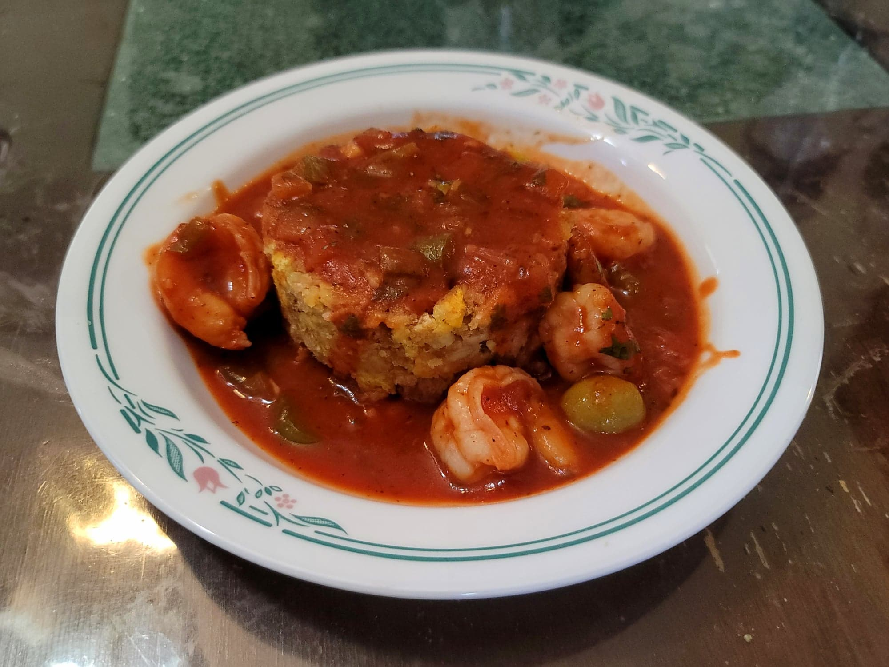

Mofongo

Ingredients:
- 4 Green plantains, each cut into 8 equal pieces
- 4-5 cloves Garlic
- 1 cup Chicharrón
- Oil for deep frying
Instructions:
- Heat the oil to 350 degrees Fahrenheit.
- Fry the plantains in the oil for about 10 minutes or until done and golden brown, stirring occasionally. Then transfer to a paper towel lined plate.
- Add the garlic to a large mortar and pestle and pound until a paste. The add in the Chicharrón and mash to combine. Then mash in the plantains.
- To serve, place into a 1 cup ramekin and fill as tightly as possible. Then flip upside onto a plate to release to get a perfect flate cylindrical shape. Top with cilantro and/or lime juice and serve with camarones guisados.